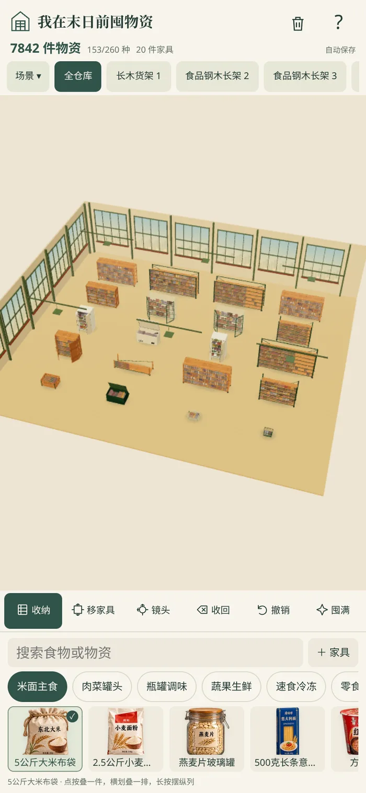
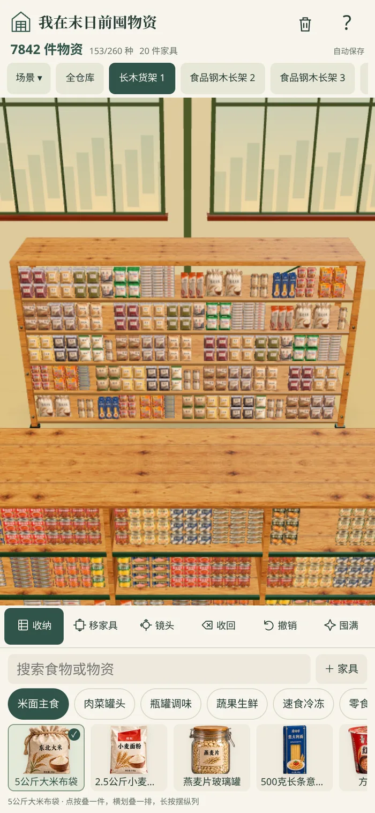
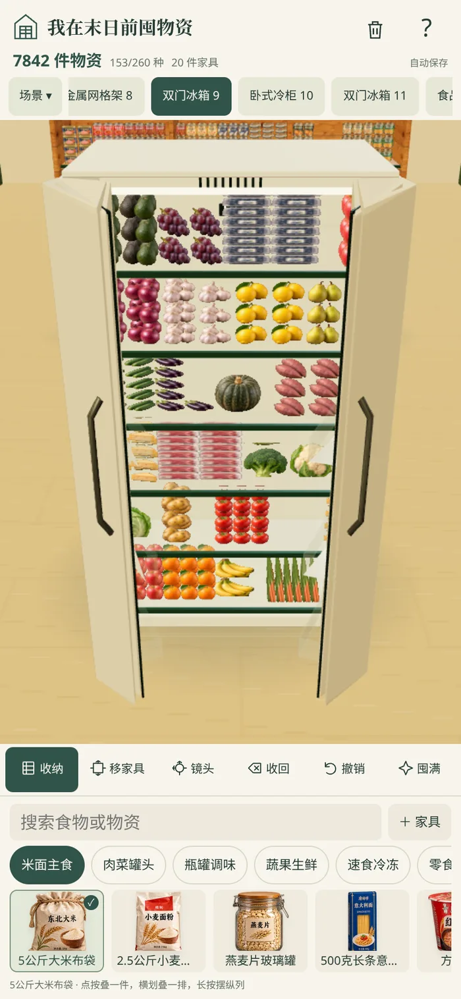
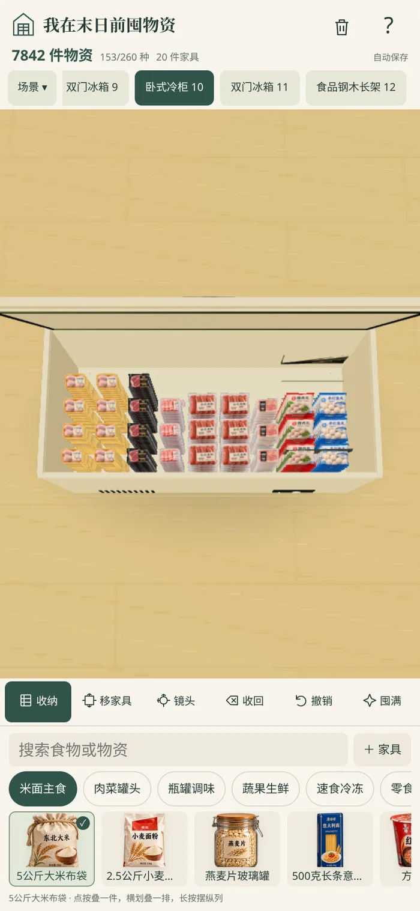

网页与小工具共用PCM拟音，旧声音淡出后停止；大米袋装降低尖锐频段，瓶子音量保持原值。75次连续音效混音检查：无削波、无瞬间停止。
调亮白天环境补光、墙面、地板和仓库外背景，保留暖色和原有场景切换。
改为手指顺时针时场景同向旋转，逆时针同理；同时检查双指平移、张开放大。
修复纹理接缝引发的白色杂线，降低法线噪声，改善透明边缘和远景采样；物品显示范围限制在实际占位内，俯视冷柜仍可看见。
修复简化网格的缺失背板、侧板、底板和顶板，移除破损原壳体及旧抽屉与首层的冲突；门和外壳不再低于地面或超出高度。
修复低档预览的旧裁切坐标以及高清图集比例变化造成的串图和空白。
18条规则测试、3条存档桥接测试、16项最终离线ZIP调试检查、16项新增触控/几何回归均通过。仓库和冰箱网页、离线版均检查。官方静态审计0错误，1条体积建议提醒；包体4.60MiB低于10MiB硬上限。
本机普通浏览器回归仅用于代码调试，不作为小红书小工具功能、兼容性或交付验收依据。小红书当前在线规范返回403，采用官方skill随包基线。待验证：同一ZIP在创服平台模拟器完整验证、Android扫码、iOS扫码；Chrome61 CSS、真实手机性能和扬声器未实测。



